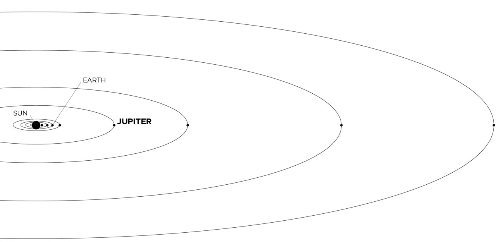

Jupiter has a long history of surprising scientists – all the way back to 1610 when Galileo Galilei found the first moons beyond Earth. That discovery changed the way we see the universe.
Fifth in line from the Sun, Jupiter is, by far, the largest planet in the solar system – more than twice as massive as all the other planets combined.
Jupiter's familiar stripes and swirls are actually cold, windy clouds of ammonia and water, floating in an atmosphere of hydrogen and helium. Jupiter’s iconic Great Red Spot is a giant storm bigger than Earth that has raged for hundreds of years.
One spacecraft – NASA's Juno orbiter – is currently exploring this giant world.
Jupiter has a long history of surprising scientists – all the way back to 1610 when Galileo Galilei found the first moons beyond Earth. That discovery changed the way we see the universe.
Fifth in line from the Sun, Jupiter is, by far, the largest planet in the solar system – more than twice as massive as all the other planets combined.
Jupiter's familiar stripes and swirls are actually cold, windy clouds of ammonia and water, floating in an atmosphere of hydrogen and helium. Jupiter’s iconic Great Red Spot is a giant storm bigger than Earth that has raged for hundreds of years.
One spacecraft – NASA's Juno orbiter – is currently exploring this giant world.
Jupiter
Jupiter is the fifth planet from our Sun and is, by far, the largest planet in the solar system – more than twice as massive as all the other planets combined. Jupiter's stripes and swirls are actually cold, windy clouds of ammonia and water, floating in an atmosphere of hydrogen and helium. Jupiter’s iconic Great Red Spot is a giant storm bigger than Earth that has raged for hundreds of years.
Jupiter is surrounded by dozens of moons. Jupiter also has several rings, but unlike the famous rings of Saturn, Jupiter’s rings are very faint and made of dust, not ice.
Namesake
Jupiter, being the biggest planet, gets its name from the king of the ancient Roman gods.
Potential for Life
Jupiter’s environment is probably not conducive to life as we know it. The temperatures, pressures, and materials that characterize this planet are most likely too extreme and volatile for organisms to adapt to.
While planet Jupiter is an unlikely place for living things to take hold, the same is not true of some of its many moons. Europa is one of the likeliest places to find life elsewhere in our solar system. There is evidence of a vast ocean just beneath its icy crust, where life could possibly be supported.
Size and Distance
With a radius of 43,440.7 miles (69,911 kilometers), Jupiter is 11 times wider than Earth. If Earth were the size of a nickel, Jupiter would be about as big as a basketball.
From an average distance of 484 million miles (778 million kilometers), Jupiter is 5.2 astronomical units away from the Sun. One astronomical unit (abbreviated as AU), is the distance from the Sun to Earth. From this distance, it takes Sunlight 43 minutes to travel from the Sun to Jupiter.

Planets are shown in the correct order of distance from the Sun and with the correct relative orbital distances. The sizes of the bodies are greatly exaggerated for emphasis. Credit: NASA/Moore Boeck
While Jupiter has been known since ancient times, the first detailed observations of this planet were made by Galileo Galilei in 1610 with a small telescope. More recently, this planet has been visited by passing spacecraft, orbiters and probes.
Pioneer 10 and 11 and Voyager 1 and 2 were the first to fly by Jupiter in the 1970s, and since then we’ve sent Galileo to orbit the gas giant and drop a probe into its atmosphere. Cassini took detailed photos of Jupiter on its way to neighboring Saturn, as did New Horizons on its quest for Pluto and the Kuiper Belt. NASA’s Juno spacecraft, which arrived in the Jovian system in July 2016, is currently studying the giant planet from orbit.
Significant Events
-
1610: Galileo Galilei makes the first detailed observations of Jupiter.
-
1973: Pioneer 10 becomes the first spacecraft to cross the asteroid belt and fly past Jupiter.
-
1979: Voyager 1 and 2 discover Jupiter's faint rings, several new moons and volcanic activity on Io's surface.
-
1992: Ulysses swung by Jupiter on Feb. 8, 1992. The giant planet's gravity bent the spacecraft's flight path southward and away from the ecliptic plane, putting the probe into a final orbit that would take it over the sun's south and north poles.
-
1994: Astronomers observe as pieces of comet Shoemaker-Levy 9 collide with Jupiter's southern hemisphere.
-
1995-2003: The Galileo spacecraft drops a probe into Jupiter's atmosphere and conducts extended observations of Jupiter and its moons and rings.
-
2000: Cassini makes its closest approach to Jupiter at a distance of approximately 6.2 million miles (10 million kilometers), taking a highly detailed true color mosaic photo of the gas giant.
-
2007: Images taken by NASA's New Horizons spacecraft, on the way to Pluto, show new perspectives on Jupiter's atmospheric storms, the rings, volcanic Io, and icy Europa.
-
2009: On 20 July, almost exactly 15 years after fragments of comet Shoemaker-Levy slammed into Jupiter, a comet or asteroid crashes into the giant planet's southern hemisphere.
-
2011: Juno launches to examine Jupiter's chemistry, atmosphere, interior structure and magnetosphere.
-
2016: NASA's Juno spacecraft arrives at Jupiter, conducting an in-depth investigation of the planet's atmosphere, deep structure and magnetosphere for clues to its origin and evolution.